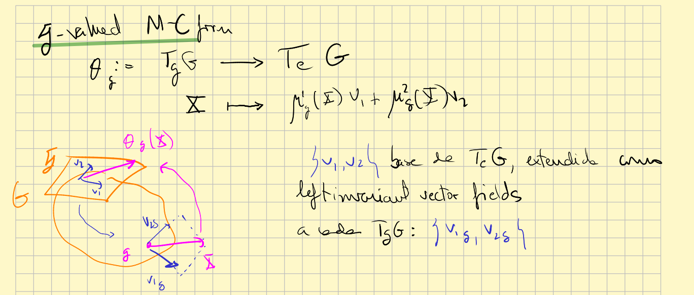

Keep an eye: I think there are two versions of Maurer-Cartan form: for Lie groups and for principal bundles. Probably they can be seen like the same, considering the Lie group as a principal bundle over a point...
Maurer-Cartan form of a Lie group
Given a Lie group $G$ with Lie algebra $\mathfrak{g}$, we call (left-invariant) Maurer-Cartan form to the map:
$$ \theta_g:=d(L_{g^{-1}})_g: T_g G \longrightarrow T_e G\cong \mathfrak{g} $$for every $g\in G$, and where $L_g$ denote the left-multiplication by $g$. It is a $\mathfrak{g}$-valued 1-form: $\theta \in T^* G \otimes \mathfrak{g}$. Its meaning is that identifies every $T_g G$ with $\mathfrak{g}$ (via left invariants vector fields), and so does with every two $T_g G$ and $T_h G.$ At this way, we have a sense of parallel transport.
Another point of view for Maurer-Cartan form:

Given a basis $\{V_i\}$ for $T_e G=\mathfrak{g}$ we can extend it to a global frame of $G$ by means of left translations (see examples here). Now, given $X\in T_g G$, the components $\mu_i(X)$ of $X$ in this frame are the Maurer-Cartan forms respect to the chosen basis. And the vector $\mu_i(X) V_i \in \mathfrak{g}$ is also called the result of the Maurer-Cartan form. The individual Maurer-Cartan forms depend on the basis, but the "joint" one don't!
If the group is a matrix group then it can be computed with the expression $\mu=g^{-1}dg$.
It is relevant for the method of moving frames.
Interpretation
See MC form for a matrix group#Interpretation.
Example
See example left invariants vector fields and Maurer-Cartan form.
MC form and left and right actions
What is the relation between left and right actions and the Maurer-Cartan form?
Suppose an element $g\in G$. For a vector $V\in T_e G$ we have two vectors in $T_gG$: the left translated $\hat{V}^l=d(L_g)_e(V)$ and the right translated $\hat{V}^r=d(R_g)_e(V)$.

Since $d(L_g)_e$ is a vector space isomorphism, we can wonder what vector in $T_e G$ corresponds to $\hat{V}^r$ be means of it, i.e., the vector $W$ such that:
$$ d(L_g)_e(W)=\hat{V}^r=d(R_g)_e(V) $$so obviously
$$ W=(d(L_g)_e)^{-1} d(R_g)_e(V)=d(L_{g^{-1}}\circ R_g)_e(V)= $$ $$ =Ad_{g^{-1}} (V), $$So since the Maurer-Cartan form $\theta_g$ is an inverse for $d(L_g)_e$:
1. $\theta_g\circ d(L_g)_e=id_{\mathfrak{g}}$
2. $\theta_g\circ d(R_g)_e=Ad_{g^{-1}}$
From 1 it can be deduced that
Proposition
The Maurer-Cartan form is a left-invariant differential form. Moreover, it is the only left-invariant form such that $\theta_e=id$.
$\blacksquare$
Proof
Let $V\in T_{a^{-1}g}G$,
$$ L_a^*(\theta_g)(V)=\theta_{g}(((L_a)_*)_{a^{-1}g}(V))=\theta_{g}(((L_g)_*)_e(\theta_{a^{-1}g}(V))=\theta_{a^{-1}g}(V) $$
So it is left-invariant.
Now, if $\alpha$ is another left-invariant 1-form with $\alpha_e=id=L_g^*(\theta_g)$ then
$$ L_{g^{-1}}^*(\alpha_e)=L^*_{g^{-1}}(L_g^*(\theta_g)) $$and so
$$ \alpha_g=\theta_g. $$$\blacksquare$
From 2, we can write, treating $\theta$ like a 1-form ($\mathfrak{g}$-valued):
$$ R_g^*(\theta)=Ad_{g^{-1}}\theta \tag {1} $$for any $h\in G$.
This can be seen from the following picture:

Let $\tilde{V}^l=d(L_h)_e(V) \in T_h G$ (it could have been an arbitrary $W\in T_hG$, but I found more visual this way). The right hand side of (1) would be telling to us that
$$ \tilde{V}^l \stackrel{\theta_h}{\longmapsto} V\stackrel{Ad_{g^{-1}}}{\longmapsto} Ad_{g^{-1}}(V) $$and the left hand side:
$$ \tilde{V}^l \stackrel{d(R_g)_h}{\longmapsto} d(R_g)_h(\tilde{V}^l)\stackrel{\theta_{hg}}{\longmapsto} Ad_{g^{-1}}(V) $$But that would be true if $d(R_g)_h(\tilde{V}^l)=d(R_{hg})_e(V)$, but this is true because
$$ d(R_g)_h(\tilde{V}^l)=d(R_g)_h(d(L_h)_e(V))=d(R_g\circ L_h)_e(V)= $$ $$ =d(R_{hg})_e(V) $$Keep an eye: I am not sure about how to proof the last equality, but it must be true...
On the other hand, the Maurer-Cartan form
Structural equation
Given a Lie group $G$ with Lie algebra $\mathfrak{g}$, the Maurer-Cartan form satisfies the following condition
$$ d\theta(X,Y)+[\theta(X),\theta(Y)]=0 $$where $X,Y$ are vector fields (any) on $G$.
It is also written
$$ d\theta+\frac{1}{2}[\theta,\theta]=0 $$for a Lie bracket defined for $\mathfrak{g}$-valued 1-forms that yields $\mathfrak{g}$-valued 2-forms (look at Wikipedia Lie algebra-valued differential forms).
Proof
See [Sharpe 1991] page 108. $\blacksquare$
It is similar to the curvature of a principal connection. Indeed, this structural equation is saying that a Klein geometry is a flat Cartan geometry.
Maurer-Cartan form on a principal bundle
Suppose $P\rightarrow M$ is a $H$-principal bundle. Then, given $v\in \mathfrak{h}$ we can consider the fundamental vector field $v^{\sharp}$. For $p\in P$, $v^{\sharp}_p$ is a vertical vector since the action of $G$ leaves the fibres invariant. So for every $p$ we have a linear isomorphism (need to be proven)
$$ \begin{array}{rcl} i_p:\mathfrak{h} & \rightarrow & V_pP \subseteq T_pP\\ v &\rightarrow &v^{\sharp}_p=\frac{d}{dt}|_{t=0}(p\cdot e^{tv}) \end{array} $$The inverse $(i_p)^{-1}$, is like a Maurer-Cartan form, which acts only on vertical vector fields. That is, we can define a kind of $\mathfrak{h}$-valued 1-form $\theta^P$ by
$$ \theta^P_p(V)=v $$where $V=\frac{d}{dt}|_{t=0}(p\cdot e^{tv})\in V_pP$, linear.
In the particular case of a Klein geometry seen as a principal bundle, the Maurer-Cartan form on the principal bundle in the sense described in this subsection coincides with the one of the beginning. See here for details.
(By the way, I think that giving a connection to $P$ is "the same as" extending this 1-form $\theta^P$ to any vector, not only the vertical ones. In the case of a Cartan connection we are doing the same, but the values are taken in an extended Lie algebra...)
________________________________________
________________________________________
________________________________________
Author of the notes: Antonio J. Pan-Collantes
INDEX: